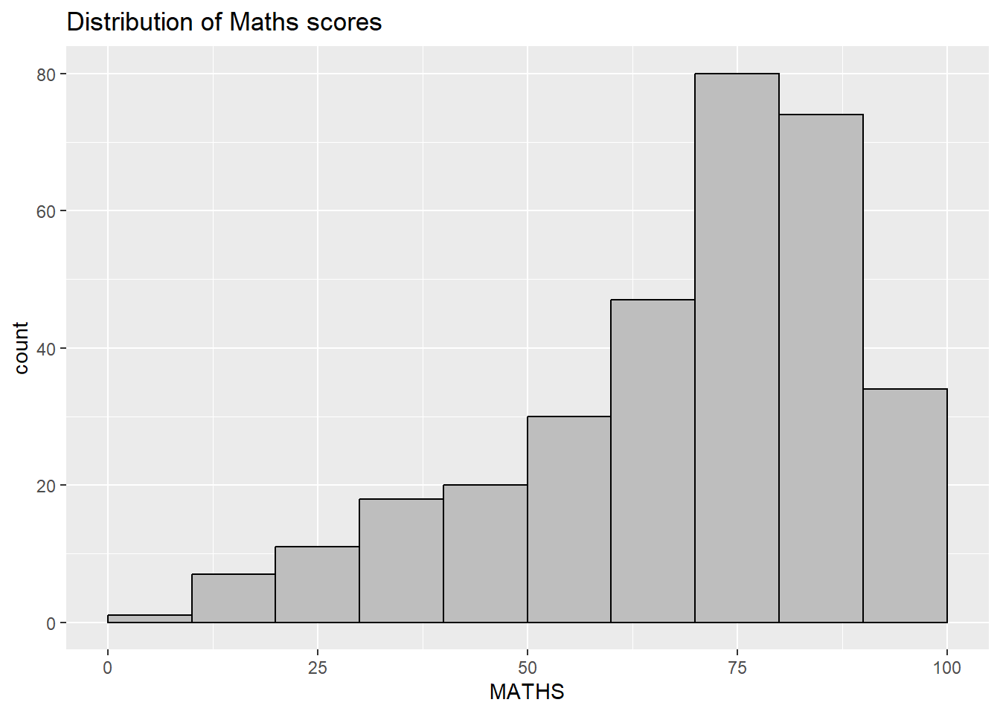
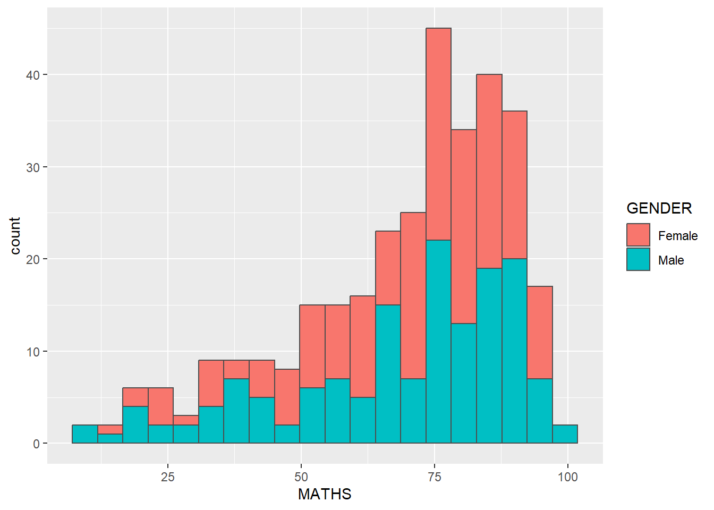
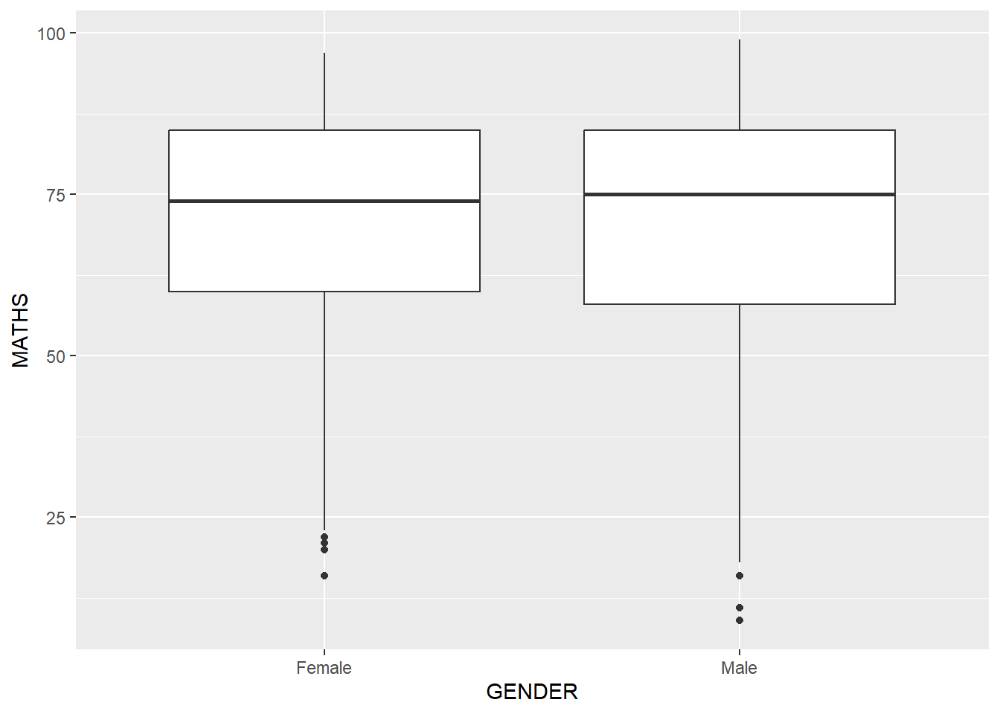
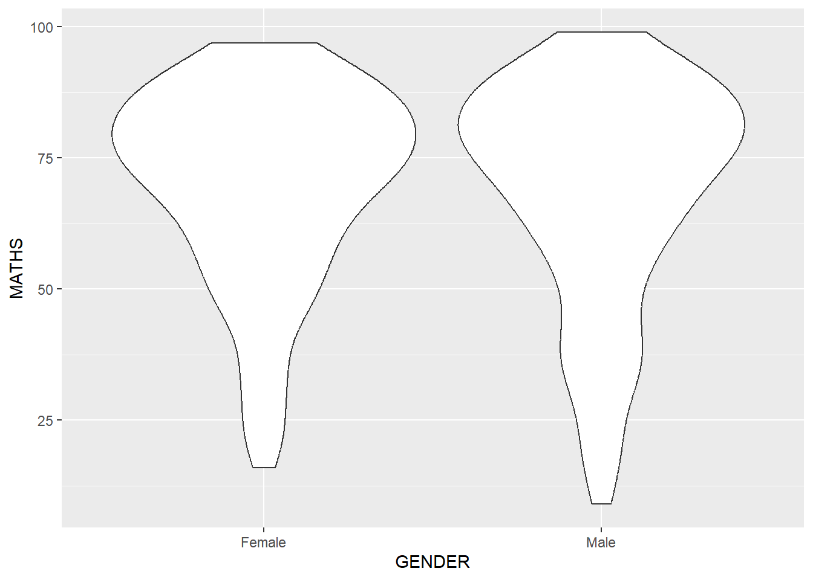
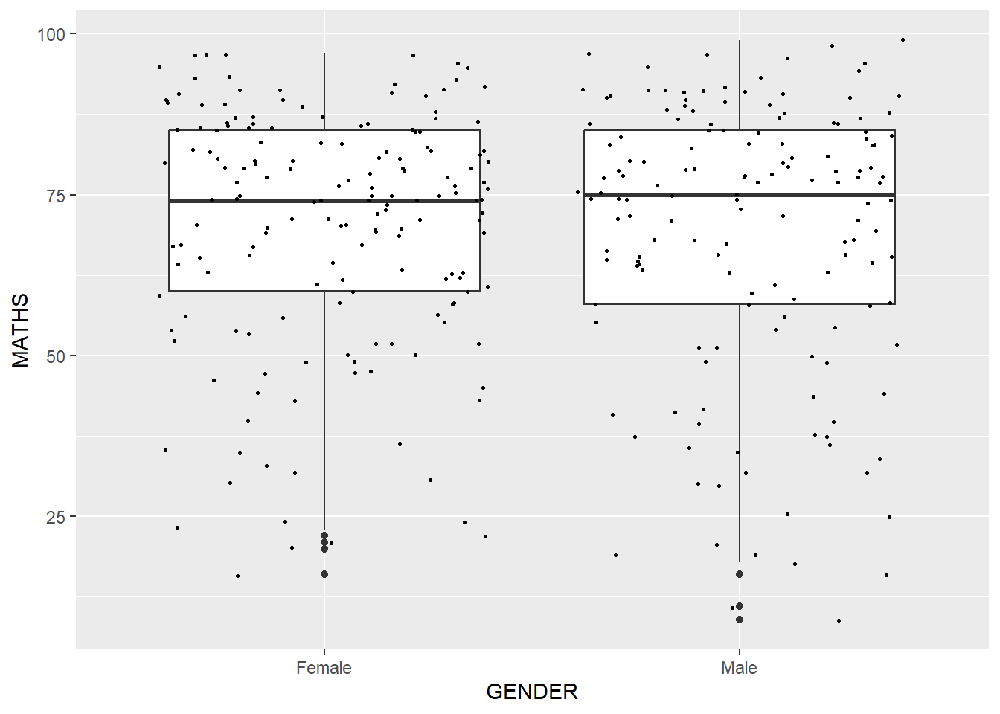
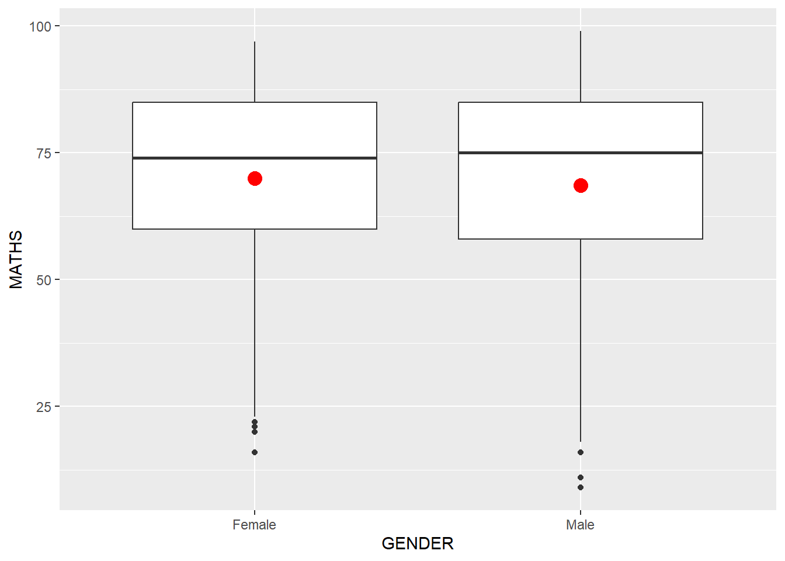

pacman::p_load(tidyverse)Hands-on Exercise 1
1 Getting Started
1.1 Install and launching R packages
The code chunk below uses p_load() of pacman package to check if tidyverse packages are installed in the computer. If they are, then they will be launched into R.
1.2 Importing the data
exam_data <- read_csv("data/Exam_data.csv")2 Plotting a simple bar chart
ggplot(data = exam_data,
aes(x = RACE)) +
geom_bar()
R Graphics VS ggplot
First, let us compare how R Graphics, the core graphical functions of Base R and ggplot plot a simple histogram.
R Graphics:
hist(exam_data$MATHS)
ggplot:
ggplot(data=exam_data, aes(x = MATHS)) +
geom_histogram(bins=10,
boundary = 100,
color="black",
fill="grey") +
ggtitle("Distribution of Maths scores")
2.1 Geometric Objects: geom_bar
The code chunk below plots a bar chart by using geom_bar().
ggplot(data=exam_data,
aes(x=RACE)) +
geom_bar()
2.2 Geometric Objects: geom_dotplot
In the code chunk below, geom_dotplot() of ggplot2 is used to plot a dot plot.
ggplot(data=exam_data,
aes(x = MATHS)) +
geom_dotplot(dotsize = 0.5)
ggplot(data=exam_data,
aes(x = MATHS)) +
geom_dotplot(binwidth=2.5,
dotsize = 0.5) +
scale_y_continuous(NULL,
breaks = NULL) 
2.3 Geometric Objects: geom_histogram()
In the code chunk below, geom_histogram() is used to create a simple histogram by using values in MATHS field of exam_data.
ggplot(data=exam_data,
aes(x = MATHS)) +
geom_histogram() 
2.4 Modifying a geometric object by changing geom()
ggplot(data=exam_data,
aes(x= MATHS)) +
geom_histogram(bins=20,
color="black",
fill="light blue") 
2.5 Modifying a geometric object by changing aes()
ggplot(data=exam_data,
aes(x= MATHS,
fill = GENDER)) +
geom_histogram(bins=20,
color="grey30")
2.6 Geometric Objects: geom-density()
ggplot(data=exam_data,
aes(x = MATHS)) +
geom_density() 
The code chunk below plots two kernel density lines by using colour or fill arguments of aes()
ggplot(data=exam_data,
aes(x = MATHS,
colour = GENDER)) +
geom_density()
2.7 Geometric Objects: geom_boxplot
ggplot(data=exam_data,
aes(y = MATHS,
x= GENDER)) +
geom_boxplot() 
ggplot(data=exam_data,
aes(y = MATHS,
x= GENDER)) +
geom_boxplot(notch=TRUE)
2.8 Geometric Objects: geom_violin
ggplot(data=exam_data,
aes(y = MATHS,
x= GENDER)) +
geom_violin()
2.9 Geometric Objects: geom_point()
ggplot(data=exam_data,
aes(x= MATHS,
y=ENGLISH)) +
geom_point() 
2.10 Geom Objects can be combined
The code chunk below plots the data points on the boxplots by using both geom_boxplot() and geom_point().
ggplot(data=exam_data,
aes(y = MATHS,
x= GENDER)) +
geom_boxplot() +
geom_point(position="jitter",
size = 0.5) 
2.11 Essential Grammatical Elements in ggplot2: stat
The Statistics functions statistically transform data, usually as some form of summary. For example:
frequency of values of a variable (bar graph)
a mean
a confidence limit
There are two ways to use these functions:
add a
stat_()function and override the default geom, oradd a
geom_()function and override the default stat.
2.12 Working with stat()
The boxplots below are incomplete because the positions of the means were not shown.
ggplot(data=exam_data,
aes(y = MATHS, x= GENDER)) +
geom_boxplot()
2.13 Working with stat - the stat_summary() method
The code chunk below adds mean values by using stat_summary() function and overriding the default geom.
ggplot(data=exam_data,
aes(y = MATHS, x= GENDER)) +
geom_boxplot() +
stat_summary(geom = "point",
fun = "mean",
colour ="red",
size=4) 
2.14 Working with stat - the geom() method
The code chunk below adding mean values by using geom_() function and overriding the default stat.
ggplot(data=exam_data,
aes(y = MATHS, x= GENDER)) +
geom_boxplot() +
geom_point(stat="summary",
fun="mean",
colour="red",
size=4) 
2.15 Adding a best fit curve on a scatterplot?
In the code chunk below, geom_smooth() is used to plot a best fit curve on the scatterplot.
ggplot(data=exam_data,
aes(x= MATHS, y=ENGLISH)) +
geom_point() +
geom_smooth(size=0.5)
The default smoothing method can be overridden as shown below.
ggplot(data=exam_data,
aes(x= MATHS,
y=ENGLISH)) +
geom_point() +
geom_smooth(method=lm,
linewidth=0.5)
2.16 Essential Grammatical Elements in ggplot2: Facets
Facetting generates small multiples (sometimes also called trellis plot), each displaying a different subset of the data. They are an alternative to aesthetics for displaying additional discrete variables. ggplot2 supports two types of factes, namely: facet_grid() and facet_wrap.
2.16.1 Working with facet_wrap()
facet_wrap wraps a 1d sequence of panels into 2d. This is generally a better use of screen space than facet_grid because most displays are roughly rectangular.
The code chunk below plots a trellis plot using facet-wrap().
ggplot(data=exam_data,
aes(x= MATHS)) +
geom_histogram(bins=20) +
facet_wrap(~ CLASS)
2.16.2 facet_grid() function
facet_grid() forms a matrix of panels defined by row and column facetting variables. It is most useful when you have two discrete variables, and all combinations of the variables exist in the data.
The code chunk below plots a trellis plot using facet_grid().
ggplot(data=exam_data,
aes(x= MATHS)) +
geom_histogram(bins=20) +
facet_grid(~ CLASS)
2.17 Essential Grammatical Elements in ggplot2: Coordinates
The Coordinates functions map the position of objects onto the plane of the plot. There are a number of different possible coordinate systems to use, they are:
- [`coord_cartesian()`](https://ggplot2.tidyverse.org/reference/coord_cartesian.html): the default cartesian coordinate systems, where you specify x and y values (e.g. allows you to zoom in or out).
- [`coord_flip()`](https://ggplot2.tidyverse.org/reference/coord_flip.html): a cartesian system with the x and y flipped.
- [`coord_fixed()`](https://ggplot2.tidyverse.org/reference/coord_fixed.html): a cartesian system with a "fixed" aspect ratio (e.g. 1.78 for a "widescreen" plot).
- [`coord_quickmap()`](https://ggplot2.tidyverse.org/reference/coord_map.html): a coordinate system that approximates a good aspect ratio for maps.2.17.1 Working with Coordinate
By the default, the bar chart of ggplot2 is in vertical form.
ggplot(data=exam_data,
aes(x=RACE)) +
geom_bar()
The code chunk below flips the horizontal bar chart into vertical bar chart by using coord_flip().
ggplot(data=exam_data,
aes(x=RACE)) +
geom_bar() +
coord_flip()
2.17.2 Changing the y- and x-axis range
The scatterplot on the right is slightly misleading because the y-aixs and x-axis range are not equal.
ggplot(data=exam_data,
aes(x= MATHS, y=ENGLISH)) +
geom_point() +
geom_smooth(method=lm, size=0.5)
The code chunk below fixed both the y-axis and x-axis range from 0-100.
ggplot(data=exam_data,
aes(x= MATHS, y=ENGLISH)) +
geom_point() +
geom_smooth(method=lm,
size=0.5) +
coord_cartesian(xlim=c(0,100),
ylim=c(0,100))
2.18 Essential Grammatical Elements in ggplot2: themes
Themes control elements of the graph not related to the data. For example:
background colour
size of fonts
gridlines
colour of labels
Built-in themes include: - theme_gray() (default) - theme_bw() - theme_classic()
A list of theme can be found at this link. Each theme element can be conceived of as either a line (e.g. x-axis), a rectangle (e.g. graph background), or text (e.g. axis title).
2.18.1 Working with theme
The code chunk below plot a horizontal bar chart using theme_gray().
ggplot(data=exam_data,
aes(x=RACE)) +
geom_bar() +
coord_flip() +
theme_gray()
A horizontal bar chart plotted using theme_classic().
ggplot(data=exam_data,
aes(x=RACE)) +
geom_bar() +
coord_flip() +
theme_classic()
A horizontal bar chart plotted using theme_minimal().
ggplot(data=exam_data,
aes(x=RACE)) +
geom_bar() +
coord_flip() +
theme_minimal()
2.19 Reference
Hadley Wickham (2023) ggplot2: Elegant Graphics for Data Analysis. Online 3rd edition.
Winston Chang (2013) R Graphics Cookbook 2nd edition. Online version.
Healy, Kieran (2019) Data Visualization: A practical introduction. Online version